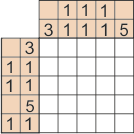
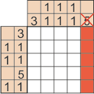

Два простых правила для успешного решения японского кроссворда:
- Порядок следования чисел: снизу вверх и слева направо. Т.е., если в столбце стоит число 3, а над ним 1, то
это значит, что нужно закрасить (где-то) снизу 3 клетки, а выше них 1 клетку в этом столбце. То же относится и к строкам.
- Между закрашенными клетками обязательно должна присутствовать как минимум одна не закрашенная клетка.
На первом этапе выискиваем те строки и столбцы, в которых количество закрашиваемых клеток будет максимальным.
Следующим этапом будет выявление тех строк и столбцов, где количество закрашиваемых клеток будет больше половины всего
столбца или строки.
В этих строках или столбцах найдём те клетки, которые будут закрашены в любом случае, независимо от того, с какой стороны
начинается закрашиваемое поле. После этого уже можно определить те клетки, которые однозначно не будут закрашены.
Их необходимо пометить каким-либо значком, например, крестиком или точкой. Дальше в ход идут логические рассуждения, с
помощью которых мы и доводим решение кроссворда до конца. В процессе решения кроссворда описанные ходы могут повторяться
несколько раз.
Как только закрасили какие-либо клетки, число, которое относится к этим клеткам, надо перечеркнуть, чтобы не запутаться
(особенно на огромных кроссвордах).
Пример решения маленького кроссворда:
1. Имеем исходный японский кроссворд. Для простоты его размеры 5х5 клеток.

2. Обратим внимание на большие числа. Сверху стоит число 5. Поскольку в столбце 5 клеток, то весь столбец можно закрасить.

3. Слева тоже есть число 5. Закрасим целиком четвертую сверху строчку кроссворда. Не забываем зачеркивать отработанные числа.
4. Слева нашли число 3. Видим, что крайняя правая клетка строки закрашена, то закрашиваем 2 соседние, а остальные помечаем пустыми.
5. 3 и 4 столбцы имеют по две одиночные клетки. И они уже закрашены, значит помечаем остальные клетки как пустые. И зачеркиваем числа.
6. Второй столбец имеет закрашенную клетку и 2 пустые выше. Закрашенные клетки не соприкасаются, значит, красим клетку из второй строки.
7. Автоматически получили готовую вторую строку, а в третьей - единственный вариант. Закрашиваем и эту клетку.
8. Последний шаг - красим последнюю клетку. Зачеркиваем тройку из первого столбца и две единицы из пятой строки. Кроссворд разгадан!
Подсказки:
Показывает случайную неправильно закрашенную клетку.
Показывает случайную клетку, которая должна быть закрашена.